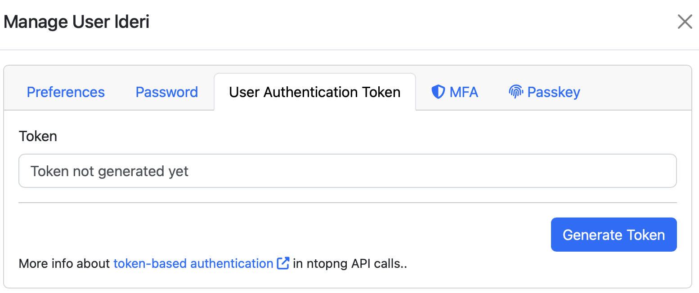

MCP Сервер
nAnalyst предоставляет все свои инструменты сетевого анализа в виде сервера протокола контекста модели (MCP), работающего на вашем экземпляре ntopng. Это позволяет любому MCP-совместимому AI клиенту, например Claude Code, Cursor или пользовательскому агенту, запрашивать данные ntopng и выполнять действия напрямую.
Что такое MCP?
Протокол контекста модели — это открытый стандарт, который позволяет приложениям AI подключаться к внешним инструментам и источникам данных через определенный интерфейс. Сервер MCP предоставляет набор инструментов, которые любой совместимый клиент LLM может обнаружить и вызвать.
Сервер ntopng MCP делает полный набор инструментов nAnalyst доступным внешним клиентам без какой-либо дополнительной установки.
Подключение клиента MCP
На хосте ntopng не требуется устанавливать дополнительное программное обеспечение. Сервер MCP работает как часть ntopng и доступен сразу после включения nAnalyst.
Клод Код
Чтобы подключиться к внутреннему серверу ntopng MCP, просто введите следующую команду на машине, на которой запущен код Claude:
claude mcp add-json ntopng \
'{"type":"http","url":"http://NTOPNG_URL:NTOPNG_PORT/lua/rest/v2/exec/llm/mcp.lua","headers":{"Authorization":"Token YOUR_TOKEN"}}' \
--scope user
Аутентификация
MCP запросы аутентифицируются с использованием ключей ntopng API. Ключи генерируются и управляются в ntopng разделе Пользователь -> Токен аутентификации пользователя. Назначьте соответствующие разрешения для ключа в зависимости от того, нужен ли клиенту доступ только для чтения или возможность создавать политики и сценарии мониторинга.
Примечание
Сервер MCP учитывает существующее управление доступом на основе ролей ntopng. Ключ с разрешениями только на чтение не может создавать политики или добавлять сценарии мониторинга, даже если клиент этого запрашивает.

ntopng Токен авторизации
Курсор и другие клиенты MCP
Используйте тот же URL-адрес конечной точки и заголовок аутентификации. Точный формат см. в документации по конфигурации MCP вашего клиента.
Доступные инструменты через MCP
Сервер MCP предоставляет все инструменты домена nAnalyst, в том числе:
get_live_flows— запросить текущие активные потокиget_historical_flow— поиск исторических записей потокаget_host_info— получить метаданные и статистику хостаget_asset_info— запросить инвентаризацию активовget_snmp_device_info— получить данные устройства SNMPchart— создавать временные ряды или ранжированные диаграммыquery— выполнить произвольный ClickHouse SQLadd_active_monitoring_script— зарегистрировать новый зонд мониторингаcreate_ai_policy— создать политику из описания на естественном языкеlist_protos— перечислить протоколы приложений, обнаруженные nDPI
Приведенные выше примеры являются лишь подмножеством. Сервер MCP предоставляет те же инструменты, что и интерфейс чата nAnalyst. Полный и актуальный список инструментов и включающих их редакций хранится в одном месте: Инструменты и лицензирование (онлайн по адресу Инструменты и лицензирование).
Варианты использования
Аналитик Клода Кода
Аналитик, использующий Claude Code на своей рабочей станции, может подключиться к ntopng и расследовать инциденты, используя естественный язык, не открывая браузер. Через терминал доступны все возможности анализа nAnalyst.
Пользовательские агенты
Группы безопасности могут создавать собственные агенты автоматизации, которые вызывают инструменты ntopng как часть более крупного рабочего процесса — например, агент, который сопоставляет данные потока ntopng с событиями SIEM или системой обработки заявок.
CI/CD и Runbook
Операционные модули Runbook могут запрашивать ntopng программно через MCP для проверки состояния сети до или после развертываний.